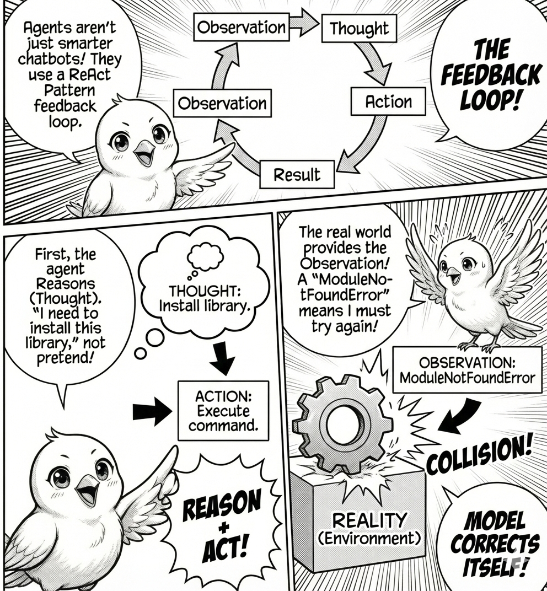

This module introduces agentic AI systems and the ReAct pattern.
You’ll learn:
What agentic AI means and how it differs from chatbots through state-based loops.
How to implement the ReAct pattern (Reason + Act) for autonomous task-solving.
The critical role of feedback loops in enabling agent intelligence.
How to build practical agents using LangGraph that query and analyze real datasets.
The Loop: Where Intelligence Emerges

ReAct Loop
Figure 1
What makes an agent different from a chatbot? A chatbot generates text and stops. An agent generates text, parses it for actionable commands, executes those commands, observes the results, and feeds those results back into the next prompt. The intelligence does not come from the model but from the feedback loop.
This is the ReAct Pattern, short for Reason + Act. A chatbot is a pure function: \text{Output} = \text{Model}(\text{Input}). An agent is a state machine:
whilenot task_complete: observation = get_environment_state() thought = model(observation) action = parse_action(thought) result = execute(action) observation = result # Feedback loop
The critical insight is the feedback loop. If the agent tries to import a missing library and receives a ModuleNotFoundError, the next iteration’s thought will be “I need to install this library.” It corrects itself not through introspection, but through collision with reality. The ReAct framework interleaves reasoning and action in three steps: the model reasons about the current state (Thought), outputs a specific command to interact with the environment (Action), and receives the result (Observation). This cycle repeats until the task is solved.
The ReAct Framework with langgraph
Let’s build an agent that can explore and analyze a real dataset. We’ll use LangGraph, a framework from LangChain that models agents as state machines. Unlike simple loops, LangGraph lets you define explicit control flow: decision nodes, parallel execution, conditional branching, and state persistence. Production agents need more than iteration. They need structured state management, error recovery, and observable transitions.
Building Your First Agent
Install LangGraph and LangChain first:
pip install langgraph langchain langchain-ollama
Now let’s build an agent that can explore and analyze a real dataset. We’ll use the Fish Market dataset from Hugging Face, a collection of measurements from different fish species. The agent will read this data, run queries, and answer questions about it.
import pandas as pd# Load the Fish datasetdf = pd.read_csv("hf://datasets/scikit-learn/Fish/Fish.csv")df.head()
Species
Weight
Length1
Length2
Length3
Height
Width
0
Bream
242.0
23.2
25.4
30.0
11.5200
4.0200
1
Bream
290.0
24.0
26.3
31.2
12.4800
4.3056
2
Bream
340.0
23.9
26.5
31.1
12.3778
4.6961
3
Bream
363.0
26.3
29.0
33.5
12.7300
4.4555
4
Bream
430.0
26.5
29.0
34.0
12.4440
5.1340
Now we’ll create tools that let the agent query this data. In LangGraph, tools are standard Python functions decorated with @tool. The function signature and docstring tell the LLM everything it needs.
import iofrom langchain_core.tools import toolfrom pandasql import sqldf@tooldef inspect_data() ->str:"""Get a concise summary of the dataset's structure, including column names, non-null values, and data types."""buffer= io.StringIO() df.info(buf=buffer)returnbuffer.getvalue()
The structure is minimal because LangGraph infers everything from the function definition. The function name becomes the tool name, the docstring becomes the description, and type hints define the schema. This particular tool takes no inputs and returns the dataset schema so the agent can discover column names and types before writing queries.
Let’s add three more tools to give the agent more analytical capabilities:
Code
@tooldef query_data(sql_query: str) ->str:"""Query the fish dataset using SQL. The table is called 'df'. Use inspect_data first to see available columns. Use find_correlations to find correlations between columns. Args: sql_query: SQL query to execute (use 'df' as table name) """ result = sqldf(sql_query, globals())return result.to_string()@tooldef find_correlations(columns: list[str]) ->str:"""Calculate the correlation matrix for a list of numeric columns in the fish dataset. Args: columns: A list of column names to calculate correlations for. """ numeric_df = df[columns].select_dtypes(include=['number']) corr_matrix = numeric_df.corr()return corr_matrix.to_string()@tooldef get_stats(column: str, species: str=None) ->str:"""Get statistical summary (count, mean, std, min, max) for a specific column and optionally filter by species. Args: column: Column name to analyze species: Species to filter by (optional) """ data = dfif species: data = df[df["Species"] == species] stats = data[column].describe() prefix =f"Stats for {column}"if species: prefix +=f" (Species: {species})"returnf"{prefix}:\n{stats.to_string()}"
Now we’ll create the agent using LangGraph. At its core, LangGraph is a state graph: a directed graph where nodes are functions and edges define transitions. This gives you explicit control over the ReAct loop.
/var/folders/j7/9dgqq5g53vnbsbmvh2yqtckr0000gr/T/ipykernel_9851/1378947355.py:16: LangGraphDeprecatedSinceV10: create_react_agent has been moved to `langchain.agents`. Please update your import to `from langchain.agents import create_agent`. Deprecated in LangGraph V1.0 to be removed in V2.0.
agent = create_react_agent(model, tools)
The create_react_agent function builds a standard ReAct graph. It defines three nodes: call the LLM, execute tools, and check if done. The recursion_limit parameter sets the maximum iterations.
Now let’s run the agent and watch it autonomously choose which tools to use.
query ="Which fish species has the highest average weight?"inputs = {"messages": [("user", query)]}result = agent.invoke(inputs)
Code
for message in result["messages"]:print(message.content)
Which fish species has the highest average weight?
<class 'pandas.core.frame.DataFrame'>
RangeIndex: 159 entries, 0 to 158
Data columns (total 7 columns):
# Column Non-Null Count Dtype
--- ------ -------------- -----
0 Species 159 non-null object
1 Weight 159 non-null float64
2 Length1 159 non-null float64
3 Length2 159 non-null float64
4 Length3 159 non-null float64
5 Height 159 non-null float64
6 Width 159 non-null float64
dtypes: float64(6), object(1)
memory usage: 8.8+ KB
Species AverageWeight
0 Pike 718.705882
The fish species with the highest average weight is **Pike**, with an average weight of approximately **718.7 grams**.
The agent executes a ReAct loop. It reads your question, realizes it needs to use SQL to group by species and calculate averages, then LangGraph streams each step. You see the LLM’s reasoning, the tool calls, and the observations in real time.
Let’s try another query that requires multiple steps:
query ="What distinctive physical characteristics stand out to identify Pike?"inputs = {"messages": [("user", query)]}result = agent.invoke(inputs)
Code
for message in result["messages"]:print(message.content)
What distinctive physical characteristics stand out to identify Pike?
Pike (*Esox lucius*) can be identified by several distinctive physical characteristics. Here are some key features:
1. **Body Shape**:
- Elongated and cylindrical body, which is typical of predatory fish.
2. **Coloration**:
- **Back**: Olive green or brown, often with darker vertical bars or stripes.
- **Sides**: Light green or silver with faint vertical stripes.
- **Belly**: Pale or white.
- The coloration helps them blend into aquatic vegetation.
3. **Head and Jaw**:
- Long, flat head with a large mouth filled with sharp teeth.
- The lower jaw protrudes slightly beyond the upper jaw.
- Pike have a reputation for their aggressive feeding behavior, often striking at prey with a quick lunge.
4. **Fins**:
- **Dorsal Fin**: Two separate dorsal fins, with the first fin positioned far back on the body.
- **Anal Fin**: Also positioned far back, close to the tail.
- **Pectoral and Pelvic Fins**: Moderately sized and positioned low on the body.
5. **Eyes**:
- Large and positioned high on the head, giving them excellent vision above and below the water.
6. **Tail**:
- Forked tail fin, which aids in their swift and powerful swimming.
7. **Size**:
- Pike can grow quite large, often reaching lengths of 3 to 5 feet (up to 1.5 meters), though they can exceed this size in ideal conditions.
8. **Habitat**:
- Typically found in freshwater environments like lakes, ponds, and slow-moving rivers with abundant vegetation.
These features make Pike easily distinguishable from other fish species, especially in their natural habitats.
This demonstrates the power of the ReAct loop. The agent chains multiple observations together, building a solution step-by-step rather than attempting everything in one shot. Unlike opaque loops, LangGraph exposes every state transition, making debugging straightforward.
Why are we using simpler queries? Real-world agentic systems face reliability challenges. Models sometimes generate malformed JSON. SQL libraries have limitations. Complex queries can hit iteration limits before completing.
Production systems like Claude Code and Cursor handle these issues through better error recovery, more sophisticated prompting, and custom tool implementations. For learning, we focus on simple queries that reliably demonstrate the ReAct pattern.
The Takeaway
This is the core architecture of Google Antigravity, Claude Code, and Cursor. Scale it up with better tools like file editing, terminal commands, and web browsing. Add better orchestration with parallel agents and verification artifacts.
The loop remains the same: Reason, Act, Observe, and repeat.